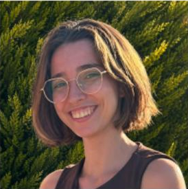

Proyecto 1
Título de tu proyecto
Describe en una frase qué hace y qué problema resuelve. Ejemplo: aplicación web de gestión con Java y Spring MVC.
JavaSpring MVCSQL
Ver código →Estudio Desarrollo de Aplicaciones Web y me apasiona crear webs claras, rápidas y bien construidas. Busco unas prácticas donde aprender en equipo y aportar desde el primer día.

Empecé en Sistemas Microinformáticos y Redes, donde aprendí cómo funcionan los equipos y las redes por dentro. Después di el salto a Desarrollo de Aplicaciones Web, y ahora combino las dos miradas: entiendo la infraestructura y me gusta construir lo que se ve encima.
He compaginado los estudios con trabajo de cara al público, lo que me ha enseñado a organizarme, gestionar el estrés y trabajar en equipo.
Describe en una frase qué hace y qué problema resuelve. Ejemplo: aplicación web de gestión con Java y Spring MVC.
Ejemplo: web responsive hecha con HTML, CSS y JavaScript para un negocio local.
Ejemplo: sitio dinámico con PHP y base de datos, con registro de usuarios.
Programación web en cliente y servidor, bases de datos, diseño de interfaces y despliegue.
Sistemas operativos, redes locales, hardware y soporte técnico.
Atención en sala y trabajo en equipo.
Gestión de clientes en entorno de alta demanda, compaginado con estudios.
Soporte técnico y mantenimiento de equipos.
Estoy buscando prácticas en desarrollo web. Escríbeme y te respondo encantada.